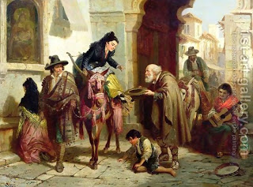

Bava Batra 9 - Importance of Charity
What is the meaning of " And He donned charity like a coat of armor ..."? Why is charity compared to a coat of armour ? To tell you that just as each scale combines to form a large coat of armour, so with respect to giving charity each coin combines with all others to comprise a large sum, that is, to be considered as a large gift, reflecting more favorably on the donor.
One who gives a small coin to a pauper is blessed with six Heavenly blessings , and one who comforts him with words gets eleven blessing .